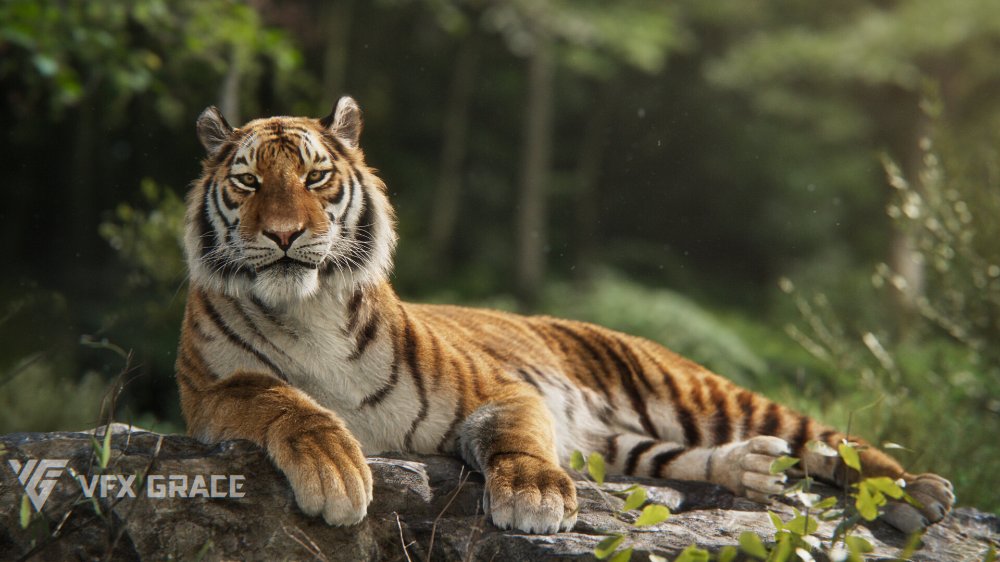
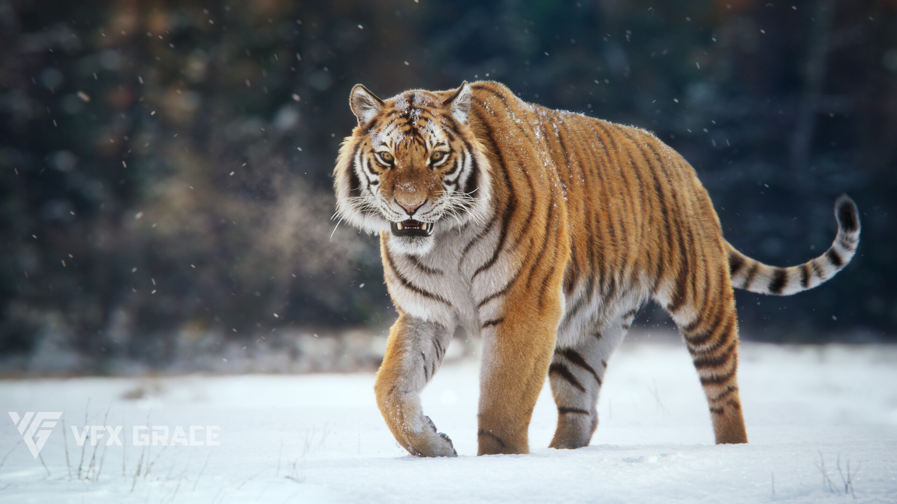

Sejarah

Harimau Siberia dikenal sebagai harimau terbesar yang ada di dunia. Dilansir Animal Fact Guide,
hewan ini memiliki panjang 3,3 meter.Selain itu, berat harimau Siberia
jantan dapat mencapai 320 kilogram.
Menariknya, ternyata berat yang dimiliki oleh sang betina jauh lebih ringan yaitu 180 kilogram.
Bahkan, terdapat laporan lain yang menyatakan ada harimau Siberia yang memiliki panjang 4 meter.
Harimau tersebut diketahui terlihat di Pegunungan Sikhote Alin Gory, Rusia.
Laporan tersebut diketahui berasal dari ilmuwan yang bernama Vyacheslav Sysoyev.
Dalam laporannya tersebut, harimau itu disebutkan memiliki berat 384 kilogram.
Karakteristik

Salah satu yang membedakan harimau Siberia dengan harimau lainnya ialah garis-garisnya.
Tak ada subspesies harimau lainnya yang memiliki pola garis serupa dengan harimau Siberia.
Menariknya, garis-garis atau belang pada bulu harimau Siberia tidak ada yang sama antara
satu dengan yang lainnya.
Harimau ini juga memiliki bulu tebal yang membuat tubuhnya tetap hangat.
Saat melahirkan, harimau betina umumnya melahirkan 6 induk dan membesarkan induknya sendirian.
Pada dasarnya, harimau Siberia memang merupakan hewan soliter atau hewan yang hidup menyendiri.
- Dapat menempuh jarak sebanyak 1000 KM
Harimau yang juga disebut harimau Amur ini ternyata dapat menempuh jarak yang sangat panjang.
Dilansir WCS Russia,hewan ini dapat menempuh jarak sepanjang 1.000 kilometer yang mana diketahui dari
selatan menuju bagian utara Rusia Timur. Bukan tanpa sebab, hal tersebut dilakukan untuk berburu mangsa seperti rusa.
Setidaknya terdapat 50 rusa yang menjadi mangsa harimau Siberia setiap tahunnya.
Berburu mangsa memang merupakan suatu kewajiban tersendiri bagi harimau tersebut,
apalagi bagi harimau betina yang baru saja melahirkan. Harimau Siberia betina
membutuhkan waktu 3 bulan untuk menunggu induknya dapat ikut berburu mangsa dengannya.
- Satu-satunya subspesies harimau yang mampu bertahan di musim salju
Seperti yang dijelaskan sebelumnya bahwa harimau Siberia memiliki bulu tebal. Selain itu,
harimau Siberia juga memiliki lapisan lemak yang tebal sehingga dapat mengecilkan kemungkinan kehilangan panas
dalam intensitas tinggi. Hal tersebut yang membuat hewan ini mampu bertahan di cuaca dingin ekstrem.
Selain itu, harimau ini selalu berpindah dari suatu tempat ke tempat lainnya.
Hal ini juga mempengaruhi kehangatan tubuhnya saat bergerak.
Harimau Siberia diketahui sebagai satu-satunya subspesies yang mampu bertahan di musim salju.
Harimau Terlangka
Harimau Siberia merupakan salah satu yang terlangka di dunia.
Jumlahnya saat ini diketahui sekitar 500 sampai 600 ekor saja. Jumlah harimau ini berpotensi berkurang
seiring dengan dampak perubahan iklim yang cukup ekstrem.
Harimau Siberia tinggal di negara-negara seperti Rusia, Mongolia, Tiongkok, dan Korea Utara.
Harimau ini merupakan salah satu hewan yang dilindungi oleh berbagai organisasi internasional maupun
pemerintah Rusia.